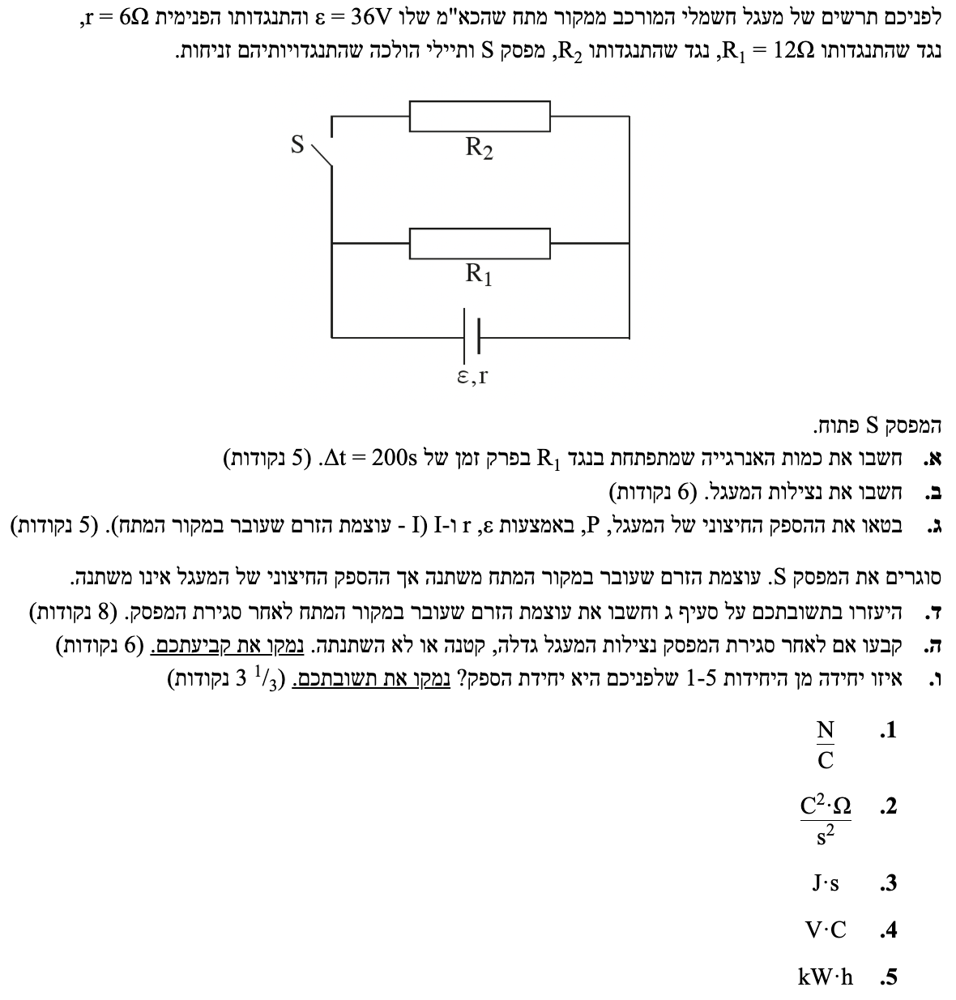

פתרון בגרות פיזיקה - חשמל 2019, שאלה 3
פיזיקה 5 יח"ל / חשמל / 2019
פתרון מפורט צעד-אחר-צעד הכולל מעגלי זרם ישר, הספק, נצילות והשפעת הוספת נגדים.
עודכן:
--- --:--:--
מבט כללי על השאלה
שאלה זו עוסקת בניתוח מעגלי זרם ישר. אנו נבחן את המעגל בשני מצבים מרכזיים: כאשר המפסק פתוח וכאשר הוא סגור.
בשלב הראשון המעגל הוא טורי פשוט. נחשב את הזרם, ההספק המנוצל על הנגד והנצילות. בשלב השני סגירת המפסק מוסיפה נגד במקביל, מה שמשנה את ההתנגדות השקולה, הזרם במקור, חלוקת ההספקים וכמובן את הנצילות.
הרעיון המרכזי כאן הוא להבין כיצד חוק שימור האנרגיה במעגל (המשתקף במתח ההדקים וההספקים) מגיב לשינויים בהתנגדות הכללית של המערכת.

[תמונת השאלה המקורית]
לא נמצאה תמונה בשם question-image.png באותה תיקייה.
מה נתון: המפסק $S$ פתוח. לכן, הזרם לא עובר דרך הנגד $R_2$, והמעגל מכיל רק את המקור והנגד $R_1$ המחוברים בטור.
כא"מ המקור: $\varepsilon = 36 \text{ V}$
התנגדות פנימית: $r = 6 \ \Omega$
התנגדות הנגד: $R_1 = 12 \ \Omega$
פרק הזמן: $\Delta t = 200 \text{ s}$ (יחידות MKS, אין צורך בהמרה).
מה מחפשים: את כמות האנרגיה $W$ (בעבודה/חום) שהתפתחה בנגד $R_1$ במהלך פרק הזמן הנתון.
נוסחאות ועקרונות בשימוש:
\( V_{ab} = \varepsilon - Ir \)
\( V = IR \)
\( P = I^2 R \)
\( W = P \Delta t \)
פתרון צעד-אחר-צעד:
נשתמש בנוסחת מתח ההדקים ובחוק אוהם עבור הנגד. מתח ההדקים שווה למתח על הנגד: $V_{ab} = I R_1$. מצד שני, מתח ההדקים של המקור מוגדר כ-$V_{ab} = \varepsilon - Ir$. נשווה ביניהם כדי למצוא את הזרם:
\[ I R_1 = \varepsilon - I r \implies I(R_1 + r) = \varepsilon \implies I = \frac{\varepsilon}{R_1 + r} \]
\[ I = \frac{36}{12 + 6} = \frac{36}{18} = 2 \text{ A} \]
כעת נחשב את ההספק בנגד ואת האנרגיה שהתפתחה:
\[ P = I^2 R_1 = 2^2 \cdot 12 = 48 \text{ W} \]
\[ W = P \Delta t = 48 \cdot 200 \]
האנרגיה שהתפתחה בנגד היא: \(W = 9600 \text{ J}\).
טיפ מורה:
כאשר מפסק מנותק, הענף שבו הוא נמצא מהווה "נתק" ולכן אין בו זרימה של מטענים. התנגדותו שקולה לאינסוף. חשוב לזכור שהאנרגיה מחושבת על ידי הכפלת ההספק בזמן, והיחידות חייבות להיות בוואט (W) ושניות (s) כדי לקבל את האנרגיה בג'אול (J).
מה נתון: המפסק $S$ עדיין פתוח. הזרם במעגל הוא $I = 2 \text{ A}$ וההספק המנוצל בנגד החיצוני הוא $P_{eff} = 48 \text{ W}$.
מה מחפשים: את נצילות המעגל, המסומנת באות היוונית אטה ($\eta$).
נוסחאות ועקרונות בשימוש:
\( \eta = \frac{P_{eff}}{P_{in}} \)
\( P_{in} = \varepsilon I \)
פתרון צעד-אחר-צעד:
נחשב תחילה את ההספק הכולל שהושקע על ידי מקור המתח (הספק כימי שהופך לחשמלי), ולאחר מכן נציב בנוסחת הנצילות יחד עם ההספק החיצוני שחישבנו בסעיף א'.
\[ P_{in} = \varepsilon I = 36 \cdot 2 = 72 \text{ W} \]
\[ \eta = \frac{P_{eff}}{P_{in}} = \frac{48}{72} = \frac{2}{3} \approx 0.667 \]
נצילות המעגל היא: \(\eta = 66.7\%\).
טיפ מורה:
נצילות תמיד תהיה מספר בין 0 ל-1 (או בין 0% ל-100%). כפי שלמדנו בכיתה, דרך נוספת ונוחה לחשב נצילות היא באמצעות היחס בין מתח ההדקים לכא"מ המקור: $\eta = \frac{V_{ab}}{\varepsilon}$. במקרה שלנו, מתח ההדקים הוא $V_{ab} = IR_1 = 2 \cdot 12 = 24\text{V}$, ולכן הנצילות היא $\eta = \frac{24}{36} = \frac{2}{3}$. זו דרך מצוינת ומהירה לבדוק את עצמכם!
מה נתון: נתונים הסמלים של המעגל: כא"מ המקור $\varepsilon$, התנגדות פנימית $r$, והזרם הכללי במעגל $I$.
מה מחפשים: ביטוי אלגברי להספק החיצוני $P$, כתלות במשתנים $\varepsilon, r, I$ בלבד.
נוסחאות ועקרונות בשימוש:
\( P_{eff} = V_{ab} I \)
\( V_{ab} = \varepsilon - rI \)
פתרון צעד-אחר-צעד:
נציב את הביטוי של מתח ההדקים $V_{ab}$ אל תוך נוסחת ההספק $P$ ונפתח סוגריים.
\[ P = V_{ab} \cdot I \]
\[ P = (\varepsilon - rI) \cdot I \]
\[ P = \varepsilon I - r I^2 \]
הביטוי להספק החיצוני הוא: \(P = \varepsilon I - I^2 r\).
טיפ מורה:
שימו לב למבנה המתמטי של התוצאה שקיבלנו. זוהי משוואה של פרבולה הפוכה (המקדם של $I^2$ שלילי). המשמעות הפיזיקלית היא שעבור הספק חיצוני מסוים, ייתכן שיהיו שני ערכי זרם שונים שיתנו את אותה תוצאה! עובדה זו תהיה קריטית לסעיף הבא.
מה נתון: המפסק $S$ סגור. נוצר מעגל שבו הנגדים $R_1$ ו-$R_2$ מחוברים במקביל. ההספק החיצוני של המעגל נותר ללא שינוי ($P = 48 \text{ W}$). $\varepsilon = 36 \text{ V}$, $r = 6 \ \Omega$.
מה מחפשים: את עוצמת הזרם החדש שעובר במקור, שנסמנו כ-$I'$.
נוסחאות ועקרונות בשימוש:
\( P = \varepsilon I' - (I')^2 r \)
פתרון צעד-אחר-צעד:
נציב את הערכים הידועים לנו לתוך הביטוי מסעיף ג' ונקבל משוואה ריבועית.
\[ 48 = 36 I' - 6(I')^2 \]
נסדר את המשוואה לצורה סטנדרטית (נעביר אגפים ונחלק ב-6):
\[ 6(I')^2 - 36 I' + 48 = 0 \quad / :6 \]
\[ (I')^2 - 6 I' + 8 = 0 \]
נפתור ונקבל שני פתרונות אפשריים: $I'_1 = 2 \text{ A}$ ו- $I'_2 = 4 \text{ A}$.
שיקול פיזיקלי: הפתרון $2 \text{ A}$ מתאר את הזרם לפני סגירת המפסק. סגירת המפסק מוסיפה מסלול לזרם, מורידה את ההתנגדות השקולה, ולכן הזרם הכולל חייב לגדול. לכן נבחר בפתרון השני.
הזרם החדש במקור הוא: \(I' = 4.00 \text{ A}\).
טיפ מורה:
מדוע ההספק יכול להיות זהה עבור שני זרמים שונים? כי הספק תלוי גם בזרם וגם בהתנגדות ($P = I^2 R_{eq}$). במצב אחד יש התנגדות חיצונית גדולה וזרם קטן, ובמצב השני התנגדות קטנה וזרם גדול. המכפלה שלהם מייצרת את אותה כמות חום לשנייה מחוץ לסוללה. השרטוט הגרפי למעלה ממחיש זאת.
מה נתון: לאחר סגירת המפסק, עוצמת הזרם גדלה מ-$2\text{A}$ ל-$4\text{A}$, בעוד שההספק החיצוני (המועיל) נותר ללא שינוי, $P_{eff} = 48\text{W}$.
מה מחפשים: לקבוע האם נצילות המעגל גדלה, קטנה או לא השתנתה, ולנמק.
נוסחאות ועקרונות בשימוש:
\( \eta = \frac{P_{eff}}{P_{in}} = \frac{P_{eff}}{\varepsilon I} \)
פתרון צעד-אחר-צעד:
ננתח את המרכיבים של נוסחת הנצילות במצב החדש לעומת הישן. המונה ($P_{eff}$) נשאר קבוע, 48W. במכנה ($\varepsilon I$), הכא"מ קבוע והזרם $I$ גדל. לכן ההספק הכולל המושקע על ידי המקור גדל.
בשבר שבו המונה קבוע והמכנה גדל, השבר כולו חייב לקטון. מתמטית:
\[ \eta_{new} = \frac{P_{eff}}{\varepsilon I'} = \frac{48}{36 \cdot 4} = \frac{48}{144} = \frac{1}{3} \approx 33.3\% \]
מסקנה: הנצילות קטנה.
טיפ מורה:
דרך אלטרנטיבית להבין זאת: זרם גדול יותר גורם לאיבוד אנרגיה רב יותר בתוך הסוללה עצמה כחום ($I^2 r$). מאחר שיותר אנרגיה מתבזבזת בתוך הסוללה, אחוז האנרגיה שמגיע למעגל החיצוני (נצילות) חייב לקטון.
מה נתון: 5 יחידות מידה מורכבות:
- \( \frac{\text{N}}{\text{C}} \)
- \( \frac{\text{C}^2 \cdot \Omega}{\text{s}^2} \)
- \( \text{J} \cdot \text{s} \)
- \( \text{V} \cdot \text{C} \)
- \( \text{kW} \cdot \text{h} \)
מה מחפשים: לקבוע איזו מן היחידות היא יחידת מידה של הספק (Power), ולנמק.
נוסחאות ועקרונות בשימוש:
\( I = \frac{q}{t} \rightarrow 1\text{A} = 1\frac{\text{C}}{\text{s}} \)
\( P = I^2 R \)
פתרון צעד-אחר-צעד:
אנו נבצע ניתוח יחידות. נבחן קודם את אפשרות מספר 2 ונפריד את היחידות לצורתן הבסיסית:
\[ \frac{\text{C}^2 \cdot \Omega}{\text{s}^2} = \left(\frac{\text{C}}{\text{s}}\right)^2 \cdot \Omega \]
כיוון שיחידת הזרם אמפר (A) היא קולון לשנייה ($C/s$), הביטוי הופך ל:
\[ = \text{A}^2 \cdot \Omega \]
על פי הנוסחה $P = I^2 R$, הכפלה של זרם בריבוע בהתנגדות נותנת הספק, ולכן יחידה זו שקולה לוואט (W).
נפריך כעת את שאר האפשרויות:
- אפשרות 1: \(\frac{\text{N}}{\text{C}}\). ניוטון לקולון היא יחידה המייצגת כוח המופעל על יחידת מטען. על פי הנוסחה $E = \frac{F}{q}$, זוהי יחידת המידה של שדה חשמלי.
- אפשרות 3: \(\text{J} \cdot \text{s}\). הספק מוגדר כקצב מסירת אנרגיה (אנרגיה חלקי זמן, $\text{J}/\text{s}$). הכפלת אנרגיה בזמן אינה נותנת הספק.
- אפשרות 4: \(\text{V} \cdot \text{C}\). וולט כפול קולון. על פי נוסחת העבודה החשמלית $W = qV$, מכפלת מטען במתח נותנת אנרגיה (הנמדדת בג'אול).
- אפשרות 5: \(\text{kW} \cdot \text{h}\). קילו-וואט שעה (קוט"ש). זוהי מכפלה של הספק בזמן ($W = P \Delta t$), ולכן יחידה זו משמשת למדידת צריכת אנרגיה ולא הספק.
התשובה הנכונה היא יחידה מספר 2: \( \frac{\text{C}^2 \cdot \Omega}{\text{s}^2} \).
טיפ מורה:
שאלות של אנליזת יחידות נפוצות מאוד ובוחנות הבנה עמוקה של משמעות הנוסחאות. הדרך הטובה ביותר לגשת אליהן היא לנסות לפרק כל יחידה מורכבת ליחידות הבסיס שלה ואז לזהות נוסחה מוכרת, בדיוק כפי שעשינו כאן. כשיש לכם זמן בבחינה, תמיד מומלץ להפריך במפורש את המסיחים — זה מוודא במאת האחוזים שלא טעיתם בניתוח שלכם!